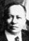
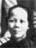
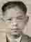

| 146,105,58,23 德 |
德欽 Āk Hïm Déqīn |
|||||||||||||
|---|---|---|---|---|---|---|---|---|---|---|---|---|---|---|
| 147,106,59,24 業 |
休業 名湖洛 Hiü Ngèp [Vũ Lōk] Xiūyè [Húluò] |
大姑 |


煦業 名佛懷 = (1)李用秀 (2)黃美芳 Huī Ngèp [Fùt Vãi] = (1)Lī Yùng Xiü (2)Võng Mî Föng Xùyè [Fóhuái] = (1) Lǐ Yòngxiù (2)Huáng Měifāng Fod Why (2/12/1883 - 3/25/1961) = (1)Lee Shee ( - 1951) |
照業 名達明 Jël Ngèp [Àt Mẽin] Zhàoyè [Dámíng] Ming |
||||||||||
| 148,107,60,25 光 |
 惠林 Fì Lĩm Huìlín |
惠森 Fì Sẽim Huìsēn |
? | 金鳳 Gïm Fùng Jīnfèng Fawn |
惠常 Fì Sẽng Huìcháng Fee Sheung |
鳳英 Fùng Yëin Fèngyīng Helen |
金珠 Gïm Jî Jīnzhū Mabel |
賜常 Xü Sẽng Cìcháng Harry |
金順 Gïm Sùn Jīnshùn Alice |
錫常 Xēik Sẽng Xīcháng Stanley |
金玉 Gïm Ngùk Jīnyù |
媚玉 Mĩ Ngùk Mèiyù |
罩好 Jâo Hāo Zhàohǎo |
仕俊 Xù Dün Shìjùn |
The inscription in the alter of 煦業 Huī Ngèp [Fùt Vãi] Fod Why's house follows:
香 煙 旋 出 平 安 字
燭 蕊 生 成 富 貴 花
金 玉 滿 堂
Hëng yën xũn chūt pẽin ön dû.
Jūk luǐ säng sẽin fü gï fä.
Gïm ngùk mōn hõng.
Xiāng yān xuán chū ping ān zì
Zhú ruǐ shēng chéng fù guì huā
Jīn yù mǎn táng
The (1) in front of 李用秀 Lī Yùng Xiü (Lǐ Yòngxiù) is used to denote first wife. Fod Why's first wife was 李用秀 Lī Yùng Xiü (Lǐ Yòngxiù). Her American name was Lee Shee Chin - same as Fee Sheung's wife's American name. Fee Sheung did this to honor his mother. 李用秀 Lī Yùng Xiü (Lǐ Yòngxiù) gave birth to all seven children listed in the tree. Sometime after 李用秀 Lī Yùng Xiü (Lǐ Yòngxiù) died in 1951, maybe late 1950's, but before 1961, Fod Why remarried. Her name was 黃美芳 Võng Mî Föng (Huáng Měifāng). She took care of him when he was very sick. She appeared in Gene and Pikfei's wedding pictures. There are also some pictures of her seeing Pikfei off to America.